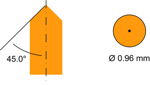

Pogo pin with cone shaped tip
The pogo pin has a cone shaped tip with a 90-degree angle at the tip.
The cone shaped tip is symmetrical. Thus the tip will contact on minimum two points of a pogo via. The cone shaped tip minimizes the long-term erosion of the tip and the via.
The figure shows the angles of the pogo pin tip:

Functional changes
- Introduced in SmarTest 7.4.2